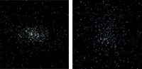

May 8, 2006
|
+ enlarge  |
|
The figures are created
from SDSS-II images. Each star in the photometric
database is assigned a color and plotted as to the star's brightness.
These images are filtered by selecting stars whose colors and magnitudes
are characteristic of the stars in each galaxy. (Credit: Vasily Belokurov, SDSS-II Collaboration) |
The Sloan Digital Sky Survey (SDSS-II) announced today discoveries of two new faint companion galaxies to the Milky Way.
The first was found in the direction of the constellation Canes Venatici (the Hunting Dog) by SDSS-II researcher Daniel Zucker at Cambridge University (UK). His colleague Vasily Belokurov discovered the second in the constellation Bootes (the Herdsman).
"I was poring over the survey's map of distant stars in the Northern Galactic sky — what we call a Field of Streams — and noticed an overdensity in Canes Venatici," Zucker explained. "Looking further, it proved to be a previously unknown dwarf galaxy. Its about 640,000 light years (200 kiloparsecs) from the Sun. This makes it one of the most remote of the Milky Way's companion galaxies."
Zucker emailed Belokurov with the news, and, just as discoveries often build upon one another, Belokurov excitedly emailed back a few hours later with the discovery of a new, even fainter dwarf galaxy. The new galaxy in Bootes, which Belokurov called Boo, shows a distorted structure that suggests it is being disrupted by the Milky Way's gravitational tides. "Something really bashed Boo about," said Belokurov.
Although the dwarf galaxies are in our own cosmic backyard, they are hard to discover because they are so dim. In fact, the new galaxy in Bootes is the faintest galaxy so far discovered, with a total luminosity of only about 10,000 Suns. But because of its distance (190,000 light years) it appears almost invisible to most telescopes. The previous dimness record holder was discovered last year in Ursa Major using SDSS-II data.
New galactic neighbors are exciting in their own right, but the stakes in searches for ultra-faint dwarfs are especially high because of a long-standing conflict between theory and observations. The leading theory of galaxy formation predicts that hundreds of clumps of "cold dark matter" should be orbiting the Milky Way, each one massive enough in principle to host a visible dwarf galaxy. But only about ten dwarf companions have been found to date.
One possibility is that the galaxies in the smaller dark matter clumps are too faint to have appeared in previous searches, but might be detectable in deep surveys like SDSS-II.
"It's like panning for gold. Our view of the sky is enormous, and we're looking for very small clumps of stars," explained Cambridge University astronomer Wyn Evans, a member of the SDSS-II research team.
Added collaborator Mark Wilkinson: "Finding and studying these small galaxies is really important. From their structure and their motions, we can learn about the properties of dark matter, as well as measure the mass and the gravity field of the Milky Way".
The new discoveries are part of the SEGUE project (Sloan Extension for Galactic Understanding and Exploration), one of the three component surveys of SDSS-II. SEGUE will probe the structure and stellar make-up of the Milky Way Galaxy in unprecedented detail.
"I'm confident there are more dwarf galaxies out there and SEGUE will find them, said Heidi Newberg of Rensselaer Polytechnic Institute, co-chair of SEGUE.